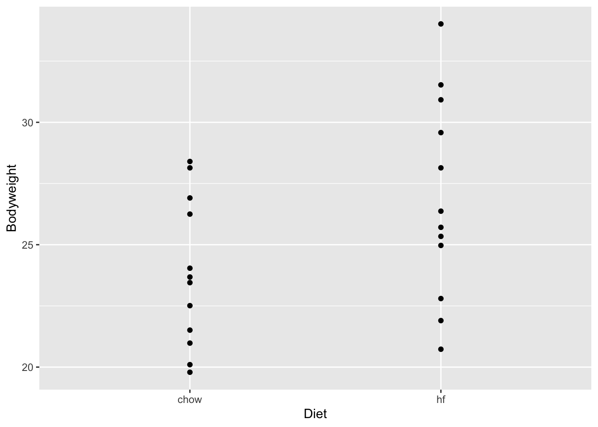

library(tidyverse)
library(ggplot2)Lab 6
Statistical tests
Overview
While I encourage you to run any test of your choosing, this lab is optional. We will also practice material learned so far to reinforce some of the This week, we’ll learn how to perform chi-square tests. To do so, I am using Mike Love and Irizarry’s book (recommended for life sciences). You can also visit Mike Love’s github page to use the book online here
Loading libraries
Loading the file You need not worry about this chunk. You may simply run it. Or you could also download the mice dataset from the website and read in as a csv file for practice.
dir <- "https://raw.githubusercontent.com/genomicsclass/dagdata/master/inst/extdata/"
url <- paste0(dir, "femaleMiceWeights.csv")
dat <- read.csv(url)Student exercise 1. How many mice are in this dataset? 2. Calculate mean weight of the mice 3. Create a scatter plot (like the one I’ve already created) 4. What is the difference in mean weight by diet of the mice?

mean_wt_hf
1 3.020833Performing chi-square and t-tests.
Let’s understand the syntax for both these tests and use p-values to determine significance.
# Perform a t-test for one categorical and one continuous var
t.test(Bodyweight ~ Diet, data = dat)
Welch Two Sample t-test
data: Bodyweight by Diet
t = -2.0552, df = 20.236, p-value = 0.053
alternative hypothesis: true difference in means between group chow and group hf is not equal to 0
95 percent confidence interval:
-6.08463229 0.04296563
sample estimates:
mean in group chow mean in group hf
23.81333 26.83417 # Chi-square requires at least 30 observations, so not ideal in this case
# Also, we do not have two categorical vars so we could recode the weight as high vs low
print(mean(dat$Bodyweight))[1] 25.32375dat_new <-
dat %>%
mutate(new_weight = if_else(Bodyweight > 25.32375, 'High', 'Low'))
test <- chisq.test(table(dat_new$Diet, dat_new$new_weight))
test
Pearson's Chi-squared test with Yates' continuity correction
data: table(dat_new$Diet, dat_new$new_weight)
X-squared = 1.5, df = 1, p-value = 0.2207To Do
Nothing!!! This marks the end of our lab section - let’s spend time practicing.